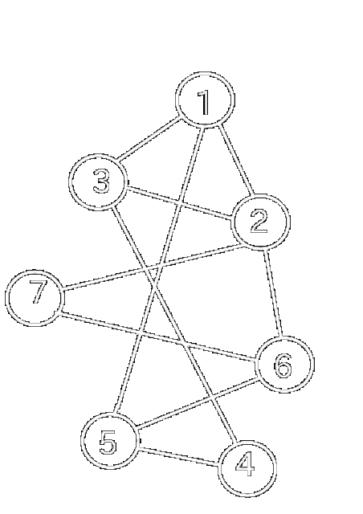

★Parcurgerea în adâncime reprezintă explorarea “naturală” a unui graf neorientat. Este foarte asemănătoare cu modul în care un turist vizitează un oraș în care sunt obiective turistice (vârfurile grafului) și căi de acces între obiective (muchiile). Vizitarea orașului va avea loc din aproape în aproape: se pleacă de la un obiectiv de pornire, se continuă cu un obiectiv învecinat cu acesta, apoi unul învecinat cu al doilea, etc.
★Parcurgerea în adâncime se face astfel:
★Observație
Dacă graful nu este conex, nu ser vor vizita toate vârfurile.
★Animație configurabilă pentru parcurgerea DFS
★Pentru implementarea algoritmului se foloseşte un vector caracteristic pentru memorarea faptului că un anume vârf a fost sau nu vizitat, la un anumit moment al parcurgerii:
v[i] = 0, vârful i nu a fost (încă) vizitatv[i] = 1, vârful i a fost vizitat★Pentru a determina ordinea în care se parcurg nodurile care pot fi vizitate, se folosește o stivă:
Pentru implementare se poate folosi ca stivă memoria STACK, prin intermediul recursivității.
★Implementare C++Presupunem că graful are n noduri și este prezentat prin matricea de adiacență a. Starea unui vârf (vizitat sau nu) este memorată în vectorul caracteristic v. Toate aceste variabile sunt globale.
void dfs(int k)
{
v[k]=1; //vizitam varful curent x
for(int i=1;i<=n;i++) // determinam vecinii nevizitati ai lui x
if(a[k][i]==1 && v[i]==0)
{
dfs(i); // continuam parcurgerea cu vecinul curent i
}
}
★Se parcurge vârful de start, apoi vecinii acestuia, apoi vecinii nevizitați ai acestora, etc, până când sunt vizitate toate vârfurile accesibile. Practic, pentru a stabili ordinea de vizitare se folosește o coadă, iar pentru a stabili dacă un vârf a fost sau nu vizitat se foloseşte un vector caracteristic.
★Algoritmul este:
★Observație
Dacă graful nu este conex, în urma parcurgerii nu se vor vizita toate vârfurile.

Vârfurile grafului au fost parcurse în ordinea:3 1 2 4 5 6 7.
★Animație configurabilă pentru parcurgerea BFS!
★Implementare C++Funcţia de mai jos presupune că un graf cu n vârfuri este memorat prin intermediul matricei de adiacenţă, vectorul x[] reprezintă coada, vectorul v[], aceste variabile fiind declarate global. Funcţia returnează numărul de elemente care au fost vizitate.
int bfs(int start)
{
int i,k,st,dr;
//initializez coada
st=dr=1;
x[1]=start;
v[start]=1;//vizitez varful initial
while(st<=dr)//cat timp coada nu este vida
{
k=x[st];//preiau un element din coada
for(i=1;i<=n;i++)//parcurg varfurile
if(v[i]==0 && a[k][i]==1)//daca i este vecin cu k si nu este vizitat
{
v[i]=1;//il vizitez
x[++dr]=i;//il adaug in coada
}
st++;//sterg din coada
}
return dr;//returnam numarul de varfuri vizitate
}